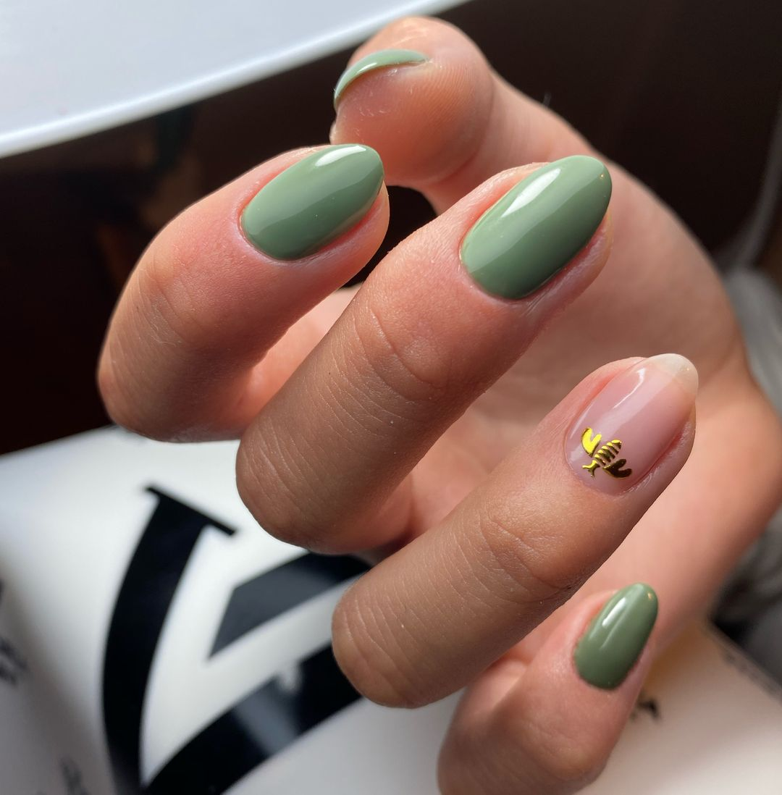
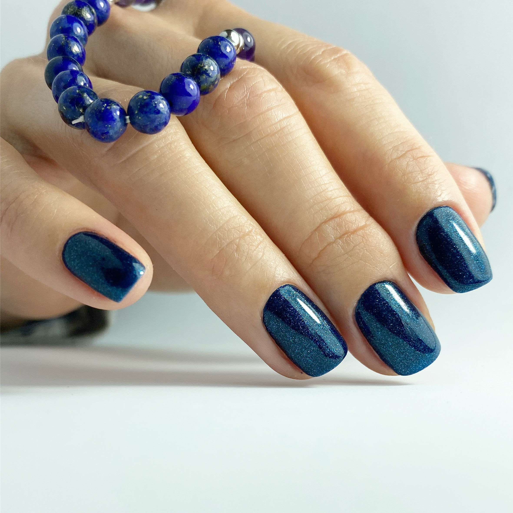
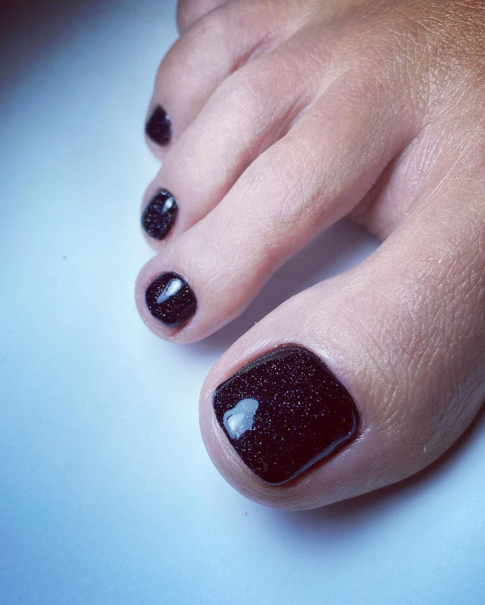
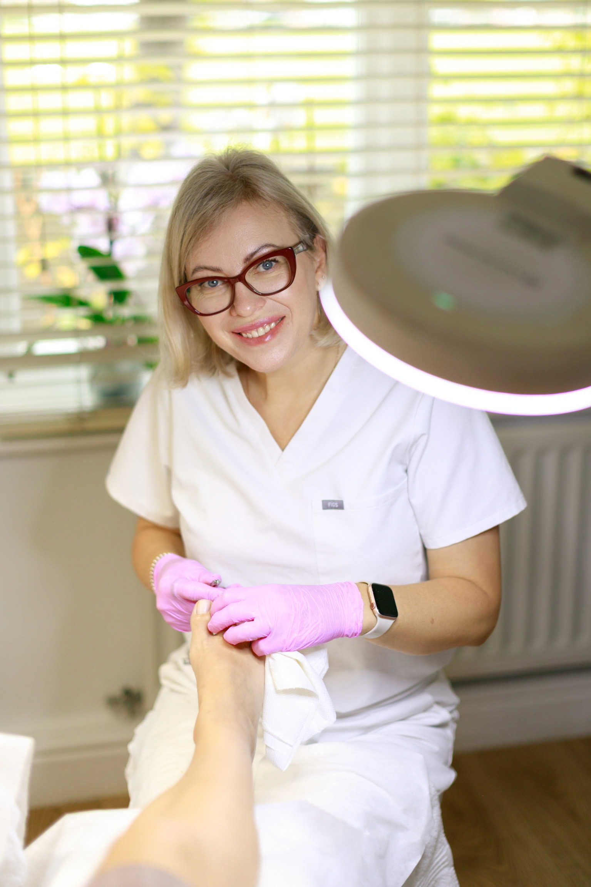
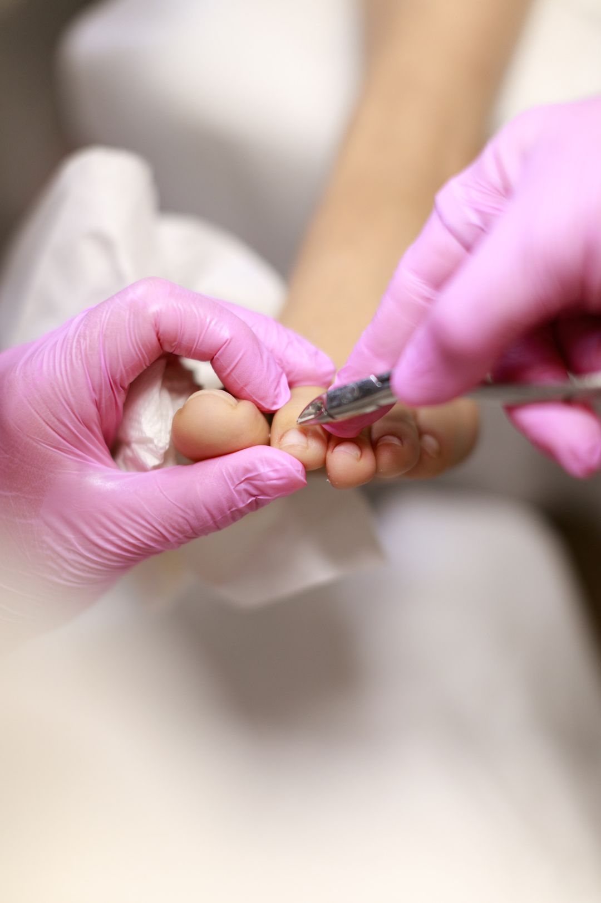
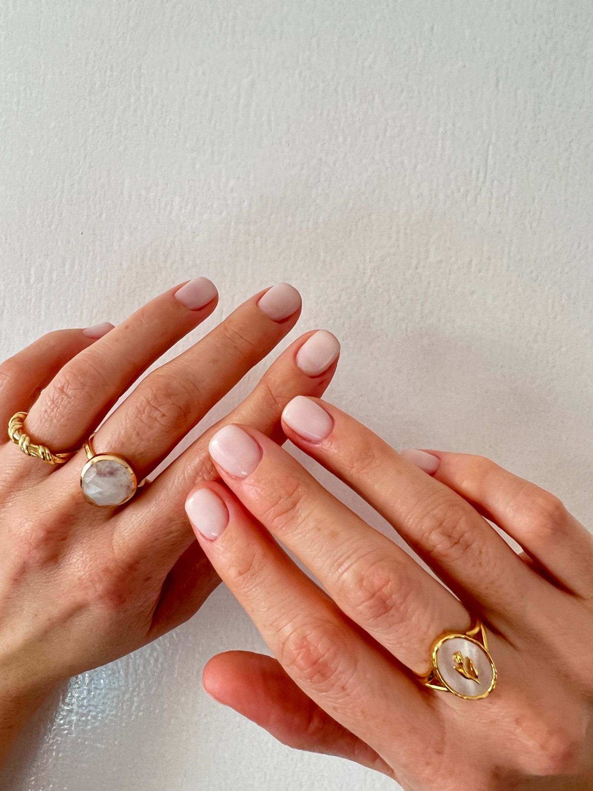
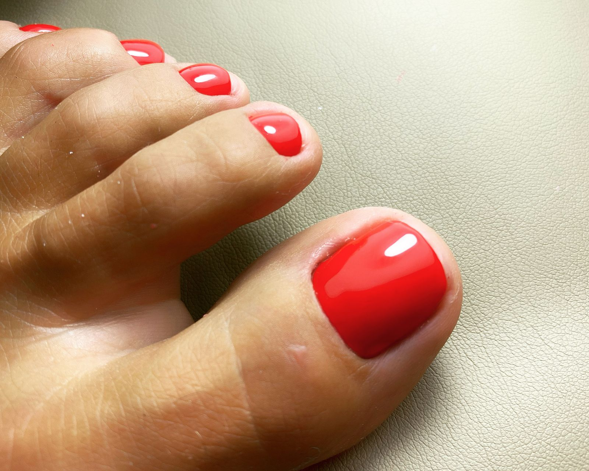
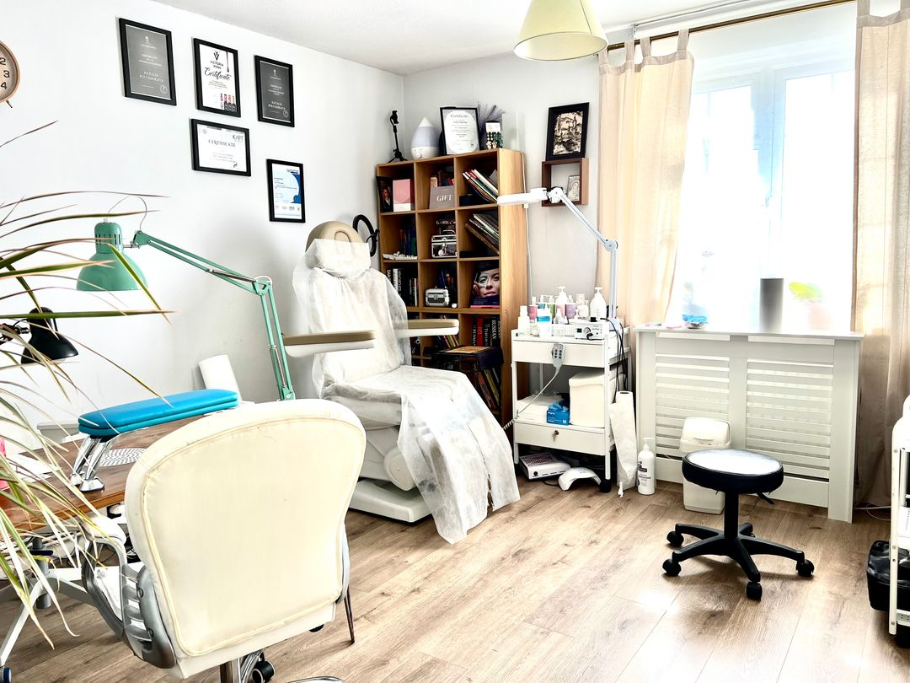

Unhurried
Your appointment is reserved for you, with time to understand what you need.
Private studio · Hampton
A calm, one-to-one appointment with Natalia Pol—created around careful work, premium products and your comfort.
01 One client at a time
02 Natural-looking results
03 Long-lasting through high-quality products
04 Certified Foot Health Professional
Natalia Pol's work
Meticulous preparation, thoughtful colour and a finish chosen for you—not simply for the trend.





Now at Surrey Nail Artisan
Professional foot care for comfort, confidence and healthier-looking feet—provided in Natalia Pol's quiet, appointment-only Hampton studio.
Nails & pedicure
Thoughtful treatments, meticulous preparation and a finish tailored to you.



The luxury of privacy
No waiting clients. No busy room. Natalia Pol welcomes one person at a time, allowing every detail of your treatment to receive her full attention.
Your appointment is reserved for you, with time to understand what you need.
Careful hygiene, sterilised instruments and disposable materials where appropriate.
Premium products, thoughtful advice and a result designed to feel like you.
Your appointment
Private nail and foot care in Hampton, by appointment only.
Book now